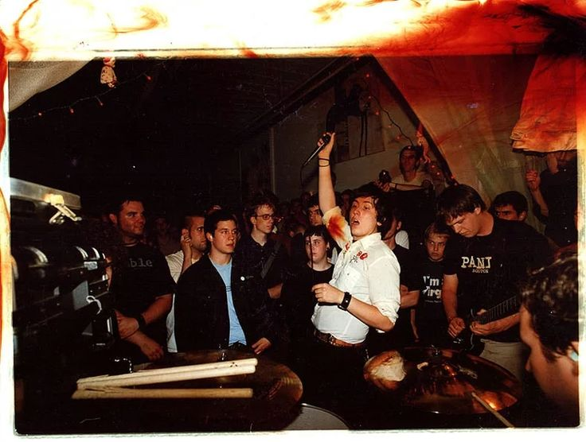

Music
Not even sure what to put here. All I know for sure is that "Real Emo" only consists of the dc Emotional Hardcore scene and the late 90's Screamo scene. What is known by "Midwest Emo" is nothing but Alternative Rock with questionable real emo influence. When people try to argue that bands like My Chemical Romance are not real emo, while saying that Sunny Day Real Estate is, I can't help not to cringe because they are just as fake emo as My Chemical Romance (plus the pretentiousness). Real emo sounds ENERGETIC, POWERFUL and somewhat HATEFUL. Fake emo is weak, self pity and a failed attempt to direct energy and emotion into music. Some examples of REAL EMO are Pg 99, Rites of Spring, Cap n Jazz (the only real emo band from the midwest scene) and Loma Prieta. Some examples of FAKE EMO are American Football, My Chemical Romance and Mineral EMO BELONGS TO HARDCORE NOT TO INDIE, POP PUNK, ALT ROCK OR ANY OTHER MAINSTREAM GENRE.
